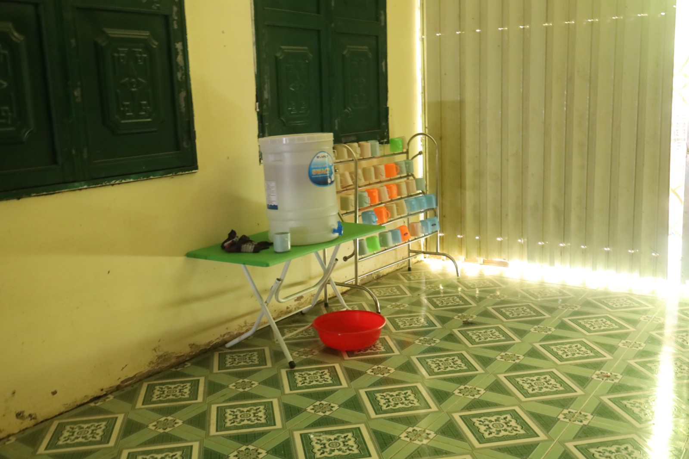
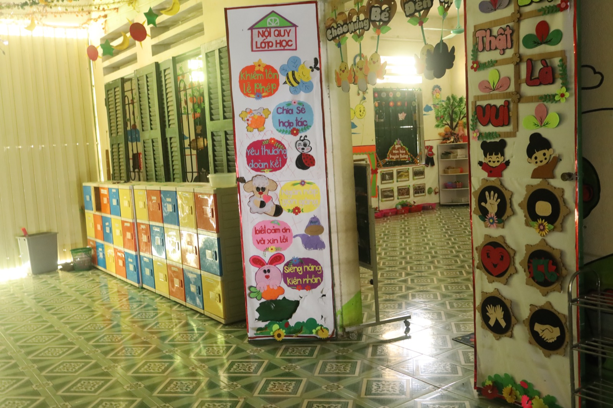
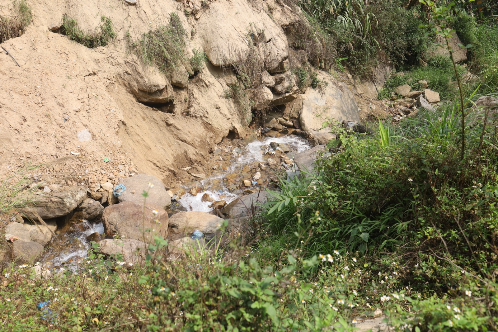
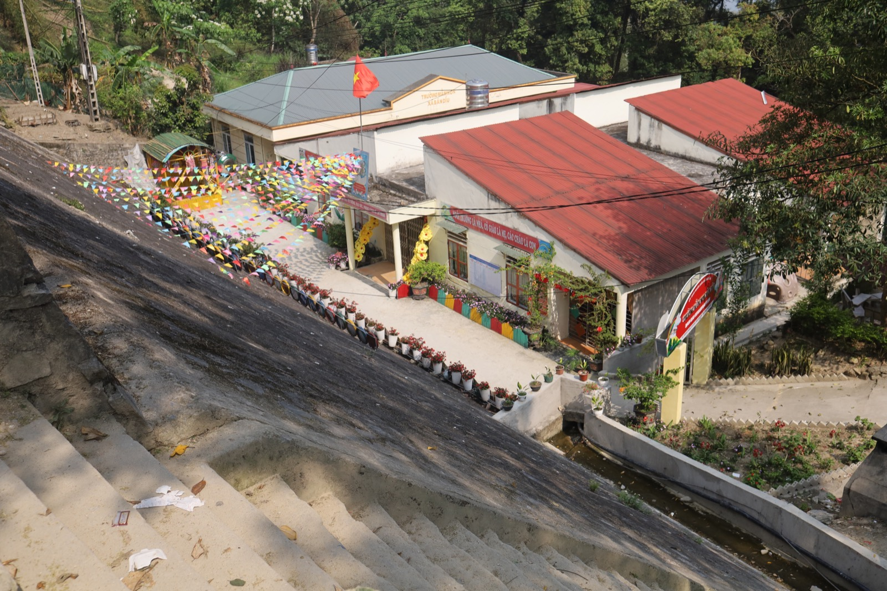

Điểm trường Tiểu học Cô Hồng
Hành trình “Mạch nước nuôi ước mơ” khởi đầu tại điểm trường Tiểu học Cô Hồng,
xã
Chiến Thắng, tỉnh
Lạng Sơn – nơi 48 em học sinh dân tộc Nùng vẫn đang từng ngày đối mặt với tình trạng thiếu nước
sinh
hoạt. Mùa mưa, nước được hứng vội từ mái nhà, đục ngầu và lẫn đầy cặn bẩn. Mùa khô, thầy cô và
bà
con phải đi xa, xuống tận vực sâu dưới khe, gánh từng can nước nhỏ về để sử dụng. Nằm trên đồi
cao,
xa trung tâm, thiếu nước sạch để nấu ăn bán trú, những bữa trưa của các em học sinh nhà xa
thường
chỉ là một nắm cơm nguội mang theo từ sáng…đôi khi chỉ là một gói mì tôm ăn sống cho qua bữa.
Giếng
khoan hình thành không chỉ phục vụ điểm trường, mà còn hỗ trợ rất lớn cho bà con xung quanh -
những
hộ dân có cuộc sống còn nhiều khó khăn, thu nhập bấp bênh, chủ yếu dựa vào nương rẫy.
Chặng 1 của Hành trình "Mạch nước nuôi nước mơ" hướng đến việc mang nguồn nước sạch ổn định đến
cho
48 em học sinh nơi đây, đồng thời cùng các em đón một ngày Tết Thiếu nhi 1/6 trọn vẹn - với bữa
ăn
đủ đầy hơn, những giờ phút giao lưu - học tập ý nghĩa, cùng sự sẻ chia yêu thương ấm áp.
Để những điều tưởng chừng rất giản dị ấy có thể trở thành hiện thực, Đọng rất cần thêm sự đồng
hành
và góp sức từ cộng đồng. Chúng mình kêu gọi tổng kinh phí như sau:
Mục tiêu kêu gọi: 67.414.400đ
Các hạng mục bao gồm:
- + Hệ thống nước sạch: 53.000.000đ
- + 48 phần quà Tết Thiếu nhi: 3.460.000đ
- + 48 phần ăn dinh dưỡng: 2.660.000đ
- + Chương trình giao lưu: 8.294.400đ




Trường THCS Thèn Phàng
Hành trình tiếp tục lan tỏa với Chặng 2 tại Trường Trung học Thèn Phàng, xã
Xín
Mần, tỉnh Tuyên Quang
– nơi 338 em học sinh đang ngày ngày theo đuổi con chữ trong điều kiện còn nhiều thiếu thốn.
Trong
số đó, có 155 em học sinh dân tộc H'Mông, Tày và Nùng đang sinh hoạt nội trú, chen chúc trong 10
căn
phòng nhỏ chỉ vỏn vẹn 15m². Những căn phòng vốn chỉ dành cho khoảng 8 người, nay lại trở thành
nơi ở
của 15, thậm chí 17 em học sinh. Không gian chật hẹp đến mức mỗi góc nhỏ đều được tận dụng.
Nhưng
thiếu thốn không chỉ dừng lại ở chỗ ở. Do không có nguồn nước ổn định, việc tắm giặt của các em
phải
chia ca - từng nhóm nhỏ lần lượt sử dụng từng chút nước ít ỏi. Nguồn nước sử dụng tại trường
cũng
không có sẵn - thầy cô phải đi mua từ nhà dân, chắt chiu cho từng nhu cầu tối thiểu của các em
học
sinh.
Với mong muốn cải thiện điều kiện sinh hoạt và học tập cho các em, Đọng kêu
gọi
sự chung tay của
cộng đồng trong Chặng 2 của hành trình “Mạch nước nuôi ước mơ” tại Trường THCS Thèn Phàng.
Hành trình hướng đến việc mang đến nguồn nước sạch ổn định, góp phần cải
thiện
sinh hoạt hằng ngày
cho các em học sinh nội trú, đồng thời tổ chức các hoạt động giao lưu – giáo dục, trao kiến
thức,
chuẩn bị một bữa ăn dinh dưỡng và trao tặng những phần quà nhỏ như một sự động viên.
Để những thay đổi thiết thực ấy có thể trở thành hiện thực, Đọng rất cần sự
đồng
hành từ cộng đồng.
Mỗi sự đóng góp không chỉ là nước sạch, mà còn là những điều kiện sống tốt hơn - để các em có
thể
yên tâm học tập và lớn lên với những ước mơ trọn vẹn hơn.
Mục tiêu kêu gọi: 67.414.400đ
Các hạng mục bao gồm:
- + Hệ thống nước sạch: 53.000.000đ
- + 48 phần quà Tết Thiếu nhi: 3.460.000đ
- + 48 phần ăn dinh dưỡng: 2.660.000đ
- + Chương trình giao lưu: 8.294.400đ
Điểm trường Mầm non & Tiểu học
Tà Sản
Chặng 3 của hành trình “Mạch nước nuôi ước mơ” dừng chân tại Tà Sản - nơi
những
lớp học nhỏ giữa vùng
đồi núi vẫn ngày ngày vang lên tiếng cười trẻ thơ của 47 em học sinh mầm non và 58 em học sinh
tiểu
học, chủ yếu thuộc dân tộc Tày và Nùng.
Tại điểm trường mầm non, điều khiến chúng mình ấn tượng nhất là lớp học luôn
sạch
sẽ, gọn gàng; nhà
vệ sinh được bố trí ngay trong lớp nhưng không hề có mùi. Tất cả cho thấy sự tận tâm và yêu
thương
mà các cô giáo dành cho các em nhỏ mỗi ngày. Cách đó không xa, tại điểm trường tiểu học, có một
lớp
học đặc biệt, được dựng lên tạm bợ giữa hai dãy nhà. Đó là lớp học được các thầy cô gọi là “vất
vả”
nhất, được thầy cô và phụ huynh góp sức xây nên để các em không phải đi học nhờ ở nhà văn hoá.
Lớp
học ấy đơn sơ hơn nhưng mọi thứ cần thiết cho việc học đều được thầy cô cố gắng chuẩn bị đầy đủ.
Có
thể nói, đó là lớp học được xây bằng sự kiên trì và tình thương nhiều hơn bất cứ vật liệu nào.
Dù
những lớp học đầy ắp yêu thương, nhưng những nhu cầu thiết yếu như nước sạch lại vô cùng thiếu
thốn.
Tại điểm trường tiểu học, nước sinh hoạt hoàn toàn phụ thuộc vào nước mưa hứng từ mái lớp học,
không
qua bất kỳ hệ thống lọc nào. Bể chứa bằng bê tông không kín, dễ nhiễm bẩn, tiềm ẩn nguy cơ phát
sinh
vi khuẩn và các bệnh truyền nhiễm.
Chặng 3 của hành trình “Mạch nước nuôi ước mơ” hướng đến việc mang nguồn nước
sạch ổn định đến cho
các em học sinh nơi đây, đồng thời cùng các em đón một mùa Tết Nguyên
đán trọn vẹn hơn - với bữa
ăn
dinh dưỡng đủ đầy, những tiết học bổ ích và ý nghĩa, và sự sẻ chia yêu thương giữa những ngày
đầu
năm.
Đọng tin rằng, với sự đồng hành của cộng đồng, hành trình này sẽ tiếp tục
mang
đến những thay đổi
bền vững - không chỉ là nguồn nước sạch, mà còn là sự an tâm, sức khoẻ và những ước mơ được nuôi
dưỡng mỗi ngày.
Mục tiêu kêu gọi: 67.414.400đ
Các hạng mục bao gồm:
- + Hệ thống nước sạch: 53.000.000đ
- + 48 phần quà Tết Thiếu nhi: 3.460.000đ
- + 48 phần ăn dinh dưỡng: 2.660.000đ
- + Chương trình giao lưu: 8.294.400đ
Nền tảng cho hành trình
Mỗi chặng trong hành trình “Mạch nước nuôi ước mơ” không chỉ dừng lại ở việc
trao nước sạch, mà được xây dựng dựa trên 3 trụ cột cốt lõi.
Trụ cột 1:
Trao yêu thương
Đó là sự chung tay từ nhiều phía: là tấm lòng của các nhà hảo tâm mong muốn góp sức, là sự quan
tâm, trăn trở của thầy cô tại các điểm trường, và là tâm huyết của Đọng trong việc kết nối, lan
tỏa những giá trị ấy. Tất cả cùng góp sức để trao đi nhiều hơn cho các em học sinh.
Trụ cột 2:
Trao kiến thức
Các hoạt động giáo dục được triển khai trong khuôn khổ chương trình giao lưu, từ nội dung hướng
nghiệp cho các em cấp 2 đến các lớp học nâng cao nhận thức về việc sử dụng và bảo vệ nguồn nước
cho các em mầm non và tiểu học, giúp các em hình thành thói quen tốt.
Trụ cột 3:
Trao công trình
Những công trình về nước được xây dựng và hoàn thiện phù hợp với điều kiện thực tế tại từng điểm
trường. Mỗi công trình được bàn giao và hướng dẫn vận hành rõ ràng, nhằm đảm bảo nguồn nước được
duy trì ổn định, lâu dài.
Giá trị được nuôi dưỡng
Nước sạch
Được đảm bảo ổn định để các em sống khỏe hơn mỗi ngày. Giúp đảm bảo nguồn nước an toàn và bền
vững cho sinh hoạt, nâng cao điều kiện sống và giúp cải
thiện sức khỏe của các em học sinh vùng cao.
Học hành
Được tiếp tục không gián đoạn. Khi những nhu cầu thiết yếu được đáp ứng, các em có thể yên tâm
đến trường và tập trung học tập.
Ước mơ
Được nuôi dưỡng và lớn lên từng ngày. Từ những điều nhỏ bé được đảm bảo, các em có thêm cơ hội để
phát triển và theo đuổi tương lai của
mình.
Kêu gọi đồng hành
"Mạch nước nuôi ước mơ" không chỉ là một dự án, mà là một lời hứa - lời hứa về nguồn nước sạch và an
toàn, về những ngày đến trường nhẹ nhõm hơn, và về một tương lai mà các em không còn phải đánh đổi
điều cơ bản nhất để được học tập trong bình an.
Và để lời hứa ấy trở thành hiện thực, Đọng rất cần bạn. Mỗi sự đồng
hành, mỗi sẻ chia của bạn, dù lớn
hay nhỏ, nhiều hay ít, chính là một phần của dòng chảy, góp lại để tạo nên một “mạch nước” đủ đầy,
bền bỉ, và dài lâu cho các em. Mọi sự hỗ trợ xin được tiếp nhận qua tài khoản thiện nguyện dưới đây:
TK THIỆN NGUYỆN MB BANK: 3790 (MA TRẦN HIẾU)
“Một mạch nước nhỏ có thể nuôi dưỡng những ước mơ lớn”
Từ Đọng - Hành trình bắt đầu
Đọng ra đời với ước mơ giản đơn: đưa nước sạch đến gần hơn với trẻ em vùng cao.
Dự án bắt đầu từ tháng 11 năm 2016, từ những chuyến đi, những lần tận mắt
thấy các em nhỏ phải đi hàng cây số để lấy nước, và phải học trong những lớp học chênh vênh, thiếu
thốn đủ bề.
Đến nay, hành trình ấy đã bước sang năm thứ 11. Tính đến tháng 04/2026,
Đọng đã có
mặt tại hơn 34
ngôi trường, mang sự đổi thay đến với hơn 3.400 học sinh. 27 hệ
thống lọc và giữ
nước đã được lắp
đặt, và vô vàn món quà nhỏ - quần áo, sách vở, chăn màn...đã được gửi đi như những điều giản dị
nhưng vô cùng thiết yếu.
Chúng mình tin rằng
Dòng nước sạch không chỉ làm dịu cơn khát mà còn nuôi dưỡng những ước mong,
Mái trường vững chãi không chỉ cho em con chữ, mà còn chở che những giấc mơ,
Và những yêu thương đúng lúc có thể sưởi ấm những trái tim bé nhỏ đơn sơ.
Vì thế, Đọng không chỉ mang nước, mà còn mang theo hy vọng và niềm tin rằng: dù đường xa đến đâu,
chỉ cần có trái tim đồng hành, mọi điều tốt đẹp đều có thể bắt đầu.